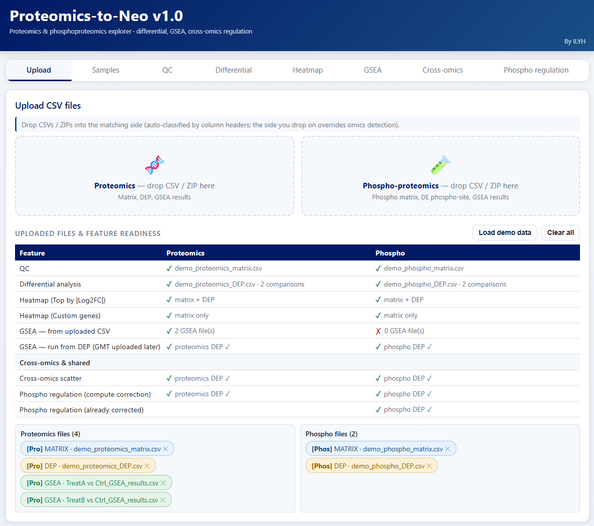
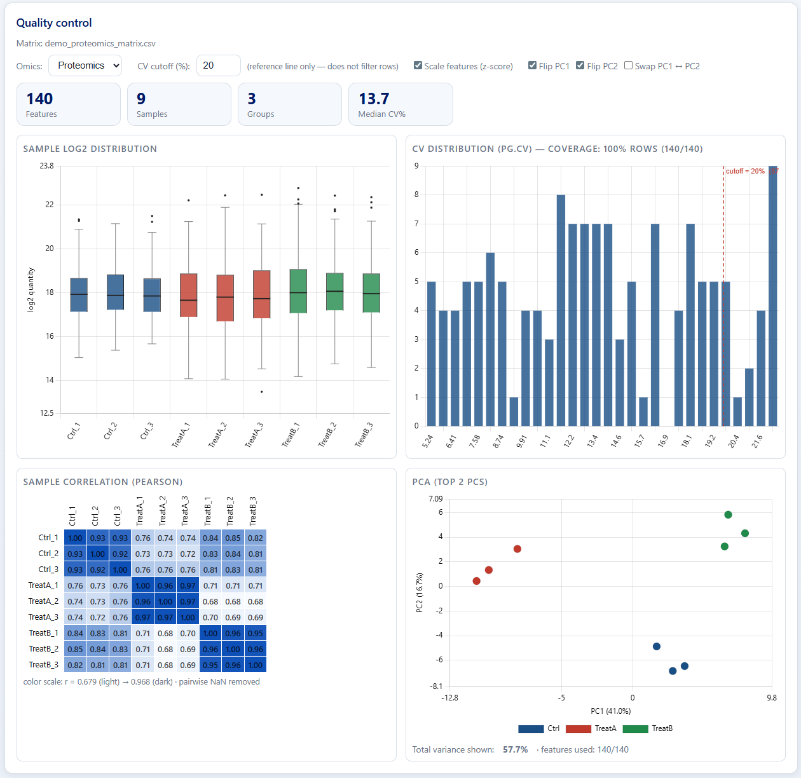
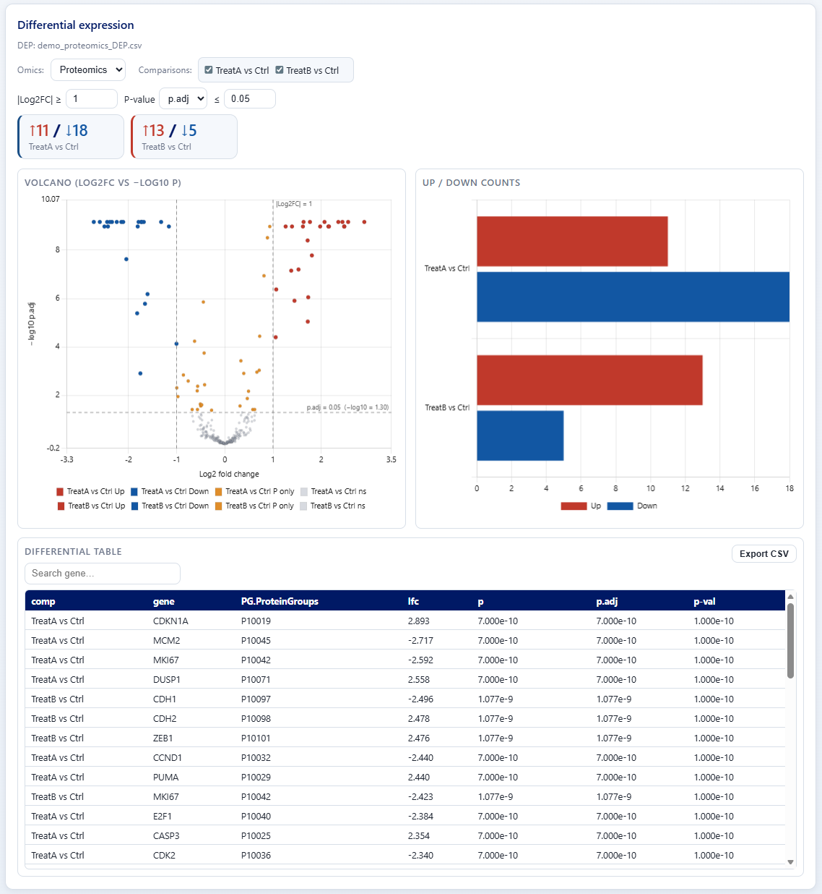
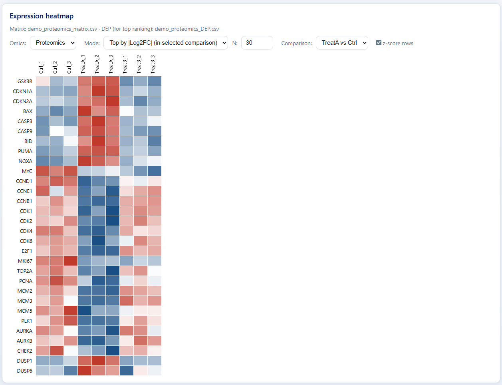
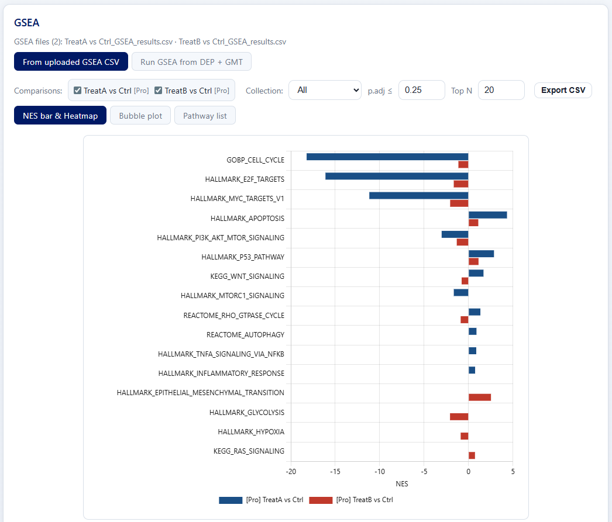
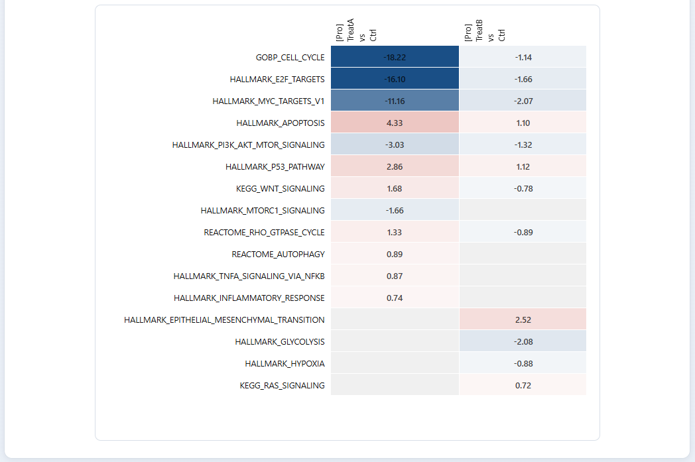
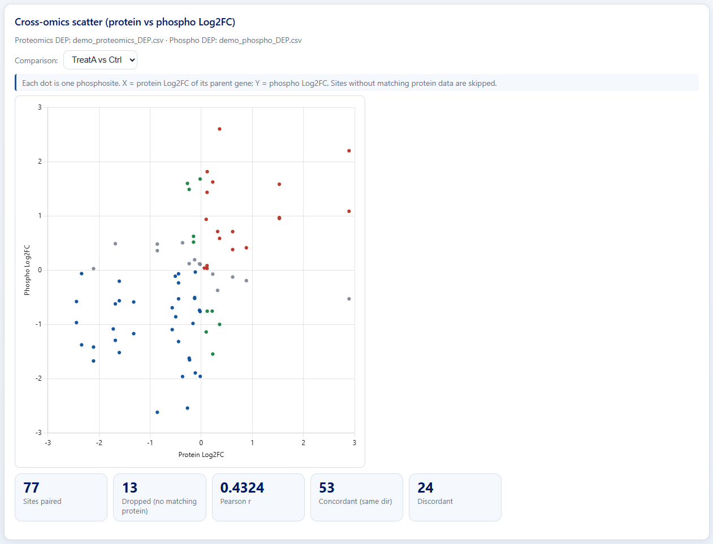
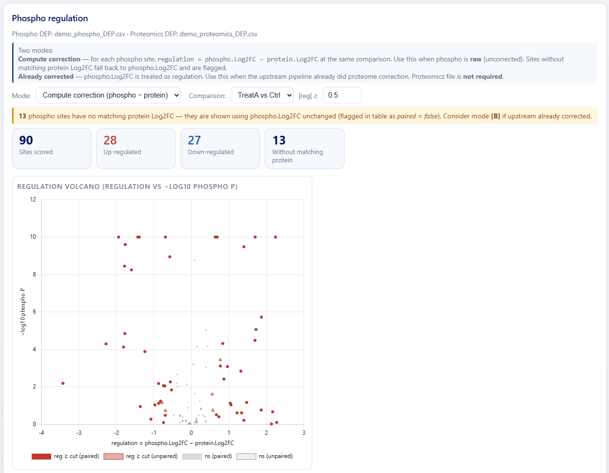

1How it works
Step 1
Upload proteomics & phospho files
Drop one or more datasets (proteomics, phospho or both). Sample annotation is parsed and assigned to groups.
Step 2
QC & differential expression
PCA, sample CV, missing-value summary; DEP detection per comparison with volcano / heatmap views.
Step 3
GSEA & bubble plots
MSigDB-backed pre-ranked GSEA; results explored as NES bar charts, heatmaps and gene-overlap bubble plots.
Step 4
Cross-omics & phospho regulation
Integrate proteomics + phospho per gene, classify regulation (paired/unpaired) and export tables & charts.
2Preview
One drop, every analysis unlocked
Drop proteomics and phospho CSV / ZIP files into the matching side — matrix, DEP and GSEA outputs are auto-classified by column headers. A live readiness table shows which downstream features (QC, DEP, heatmap, GSEA, cross-omics, phospho-regulation) are ready, file by file.

Quality control at a glance
Sample-level Log2 distribution, CV histogram with adjustable cutoff, pairwise Pearson correlation matrix and a top-2 PCA — all rendered side by side from the same matrix. Z-score scaling and PC flipping toggles let you reorient PCA without leaving the page.

Differential expression, fully interactive
Per-comparison volcano plot with up/down counts and a sortable, searchable DEP table. Adjust |Log2FC| and adjusted-p thresholds and the volcano, count bars and table re-tally instantly; export the filtered DEP table as CSV.

Expression heatmap on demand
Z-scored row heatmap of the top features by |Log2FC| in the chosen comparison, or a custom gene list. Mode, top-N and comparison selectors regenerate the heatmap in place — no manual reshaping or external scripts.

GSEA across pathways & comparisons
Pre-ranked GSEA from uploaded CSVs (or run live from DEP + GMT). Explore as NES bar chart, NES heatmap, bubble plot or pathway list across multiple comparisons; collection, p.adj and Top-N filters update every view together. Leading-edge gene collapse is annotated as
GENE(×N).

Cross-omics scatter
Each phosphosite is plotted against its parent protein (X = protein Log2FC, Y = phospho Log2FC). Concordant / discordant counts, Pearson r and unpaired-site dropouts are summarized alongside the plot, so cross-layer trends emerge in one click.

Phospho regulation volcano
Two modes: compute correction (regulation = phospho.Log2FC − protein.Log2FC) or treat phospho.Log2FC as already-corrected regulation. Up- / down-regulated counts, paired-vs-unpaired markers and adjustable |reg| cutoff make protein-corrected phospho changes obvious without R or scripts.
